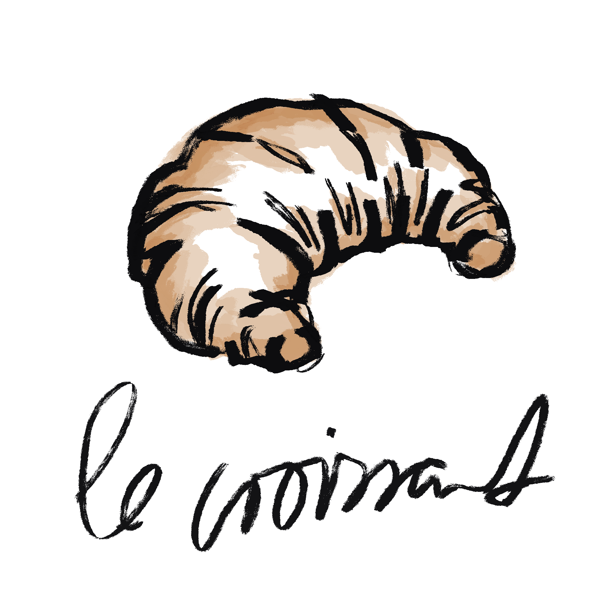
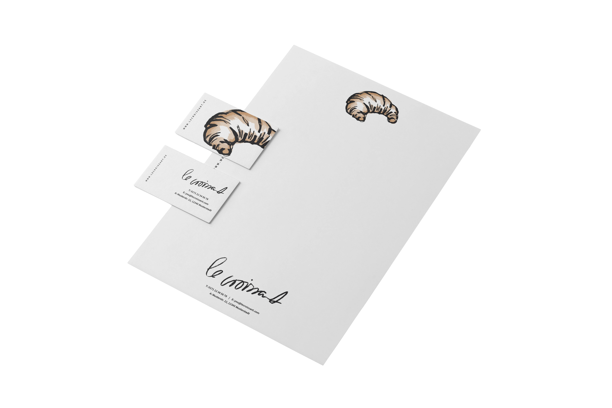
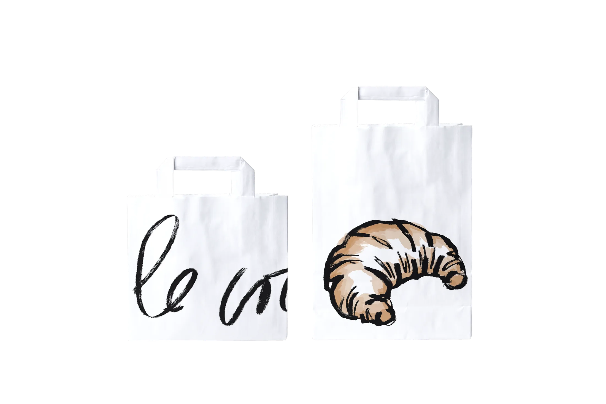
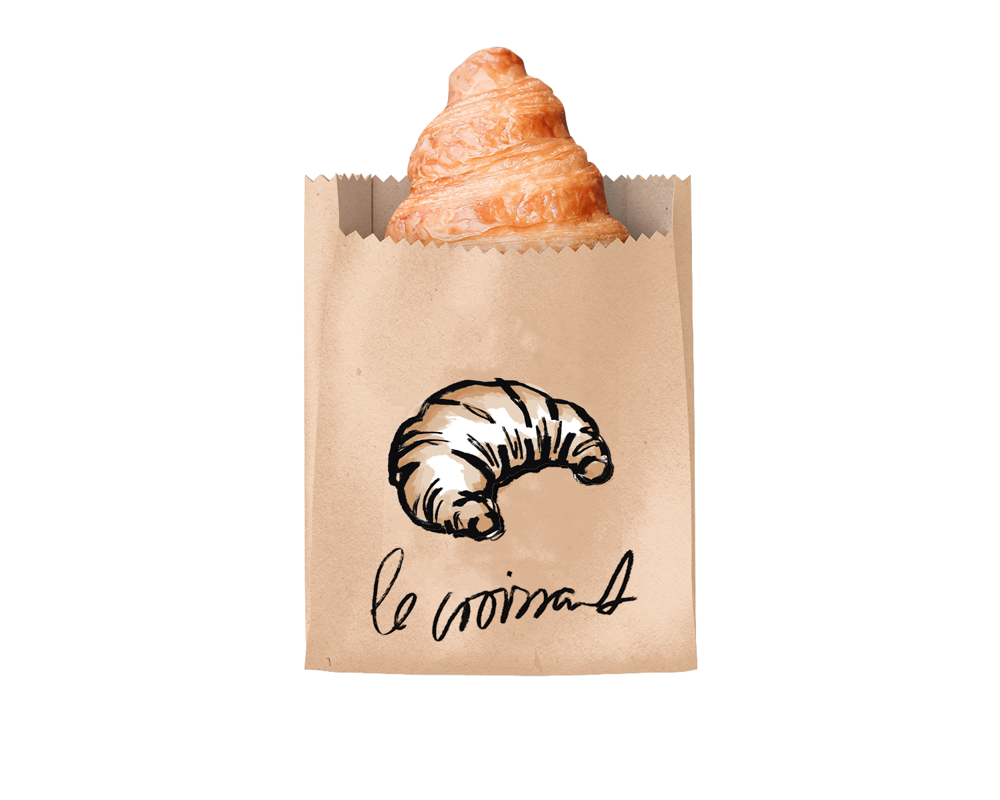

Le Croissant - Branding & Corporate Design

Für das fiktive Café Le Croissant habe ich ein vollständiges Corporate Design entwickelt. Das Branding umfasst Logo, Wort-Bild-Marke, Geschäftsausstattung und Verpackungsdesign. Die Gestaltung verbindet französisches Flair mit moderner, minimalistischer Formensprache.




